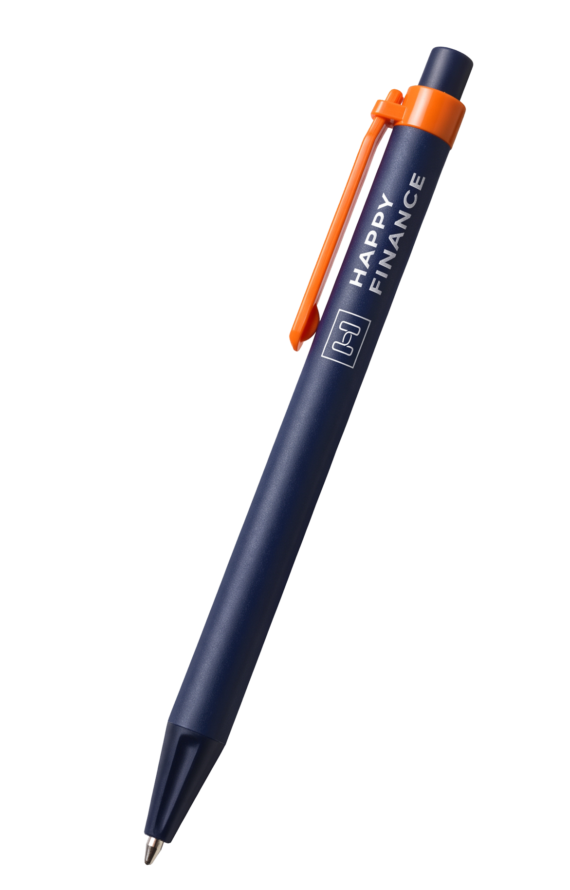

Бухгалтерський супровід ФОП і ТОВ
Облік, звітність і податки під вашу систему оподаткування.
Фінансово-бухгалтерський супровід ФОП і ТОВ. Беремо на себе облік і звітність, а ви бачите реальні показники бізнесу та впевнено приймаєте рішення.
У будь-якій ситуації пропонуємо варіанти. Для нас немає безвихідних запитів.
Облік і показники, за якими видно слабкі місця й можна приймати рішення.
Консультуємо з практикою управління командою та бізнесом, а не лише законодавством.
Підбираємо зручний документообіг, точки контролю й автоматизацію, що економить час команди.
Знайомі ситуації?
Бухгалтерія — це не просто документи, потрібні податковій. Це ваш спокій і безпека зараз і в майбутньому.
Підібрати пакет за 1 хвилинуЦифри бізнесу з’являються раз на рік, коли треба здавати звіт.
Документи розкидані по месенджерах і папках, ніхто не знає, що де лежить.
Бухгалтер здає звіти, але на питання «що зараз із бізнесом?» відповіді немає.
Лист із податкової лякає, бо невідомо, чи все гаразд в обліку.
Послуги
Від першого документа до показників, за якими видно стан бізнесу. Кожен напрямок налаштовуємо під ваш бізнес, а не навпаки.
Облік, звітність і податки під вашу систему оподаткування.
Відкриваємо й закриваємо ФОП і ТОВ без зайвих кроків.
Кадрові документи, табелі, нарахування та виплати.
P&L, Cash Flow, Balance: цифри, за якими приймають рішення.
Знаходимо вузькі місця й налаштовуємо документообіг.
Нестандартні ситуації розбираємо й шукаємо варіанти.
Бухгалтерія — більше, ніж звітність
«Без цифр управління бізнесом — це не управління, а ілюзія.»
Як ми працюємо
Спочатку розбираємось, як працює ваш бізнес. Лише потім будуємо облік.
Дивимось, як усе працює зараз, а не як мало б працювати.
Знаходимо вузькі місця й напрямки, де можна полегшити роботу.
Розподіляємо відповідальність і контроль під ваш бізнес і власника.
Зручний обмін документами й менше рутини для вашої команди.
Ведемо облік і звітність та показуємо цифри, на які можна спиратись у рішеннях.
Перерва на хвилину
Операції падають, а ви розкладаєте їх по місцях: надходження, витрати чи податки. Так виглядає порядок в обліку, коли за ним стежить фахівець.
На комп’ютері: клавіші 1 2 3
Підібрати пакет
Чотири питання, і ви побачите, з чого складається супровід саме для вашого бізнесу. Далі напишіть нам у Telegram: повідомлення вже буде готове.

Засновниця
Мій шлях у бізнесі розпочався з бухгалтерського обліку й привів до фінансового та операційного управління, керівництва підприємствами й антикризового менеджменту. Для мене фінанси — це не просто звіти, податки й цифри. Це інструмент, який допомагає власнику розуміти реальний стан підприємства й ухвалювати обґрунтовані рішення.
Команда
Команда має досвід у різних напрямках, тому ви отримуєте комплексний супровід, а не набір окремих послуг. Вихідні в нас вихідні: так ми зберігаємо якість і терміни.
Веде облік від первинних документів до звітності. Досвід у торгівлі, будівництві та на посаді фінансового директора.
Відповідає за щоденні операції: первинні документи та роботу з ПРРО, щоб в обліку не було прогалин.
Понад 20 років у бухгалтерії. Відповідає за нарахування зарплати та кадрові розрахунки.
Керувала відділом обліку первинних документів (13 людей у трьох філіях) і закупівлями. Знає, як будуються процеси.
FAQ
Не знайшли відповіді? Напишіть нам, і ми розберемо саме вашу ситуацію.
Написати в TelegramСпершу аналізуємо чинний облік і документи, узгоджуємо порядок передачі та терміни. Після цього беремо облік і звітність на себе.
Проводимо ревізію: знаходимо слабкі місця, недоліки й порушення та пропонуємо план виправлення. Ви бачите, що саме потрібно змінити.
Допомагаємо підготувати документи, звірки й пояснення, супроводжуємо під час перевірки та шукаємо варіанти рішення у спірних ситуаціях.
Підбираємо зручний документообіг під ваш бізнес: узгоджуємо канали, порядок обміну й точки контролю, щоб усе було видно й нічого не губилось.
У будні, у робочий час. Команда не працює у вихідні та після 17:00: це наш спосіб зберігати якість і терміни. Рідкісні винятки обговорюємо заздалегідь.
Вартість залежить від форми бізнесу, системи оподаткування, кількості операцій і працівників. Пройдіть підбір пакета за хвилину або залиште заявку, і ми підготуємо пропозицію під ваш запит.
Залиште контакти, і ми зв’яжемося з вами. Можна також одразу зателефонувати чи написати в Telegram.
Повний текст політики конфіденційності буде додано перед запуском сайту. Контакти, які ви залишаєте у формі, використовуються лише для зв’язку з вами.